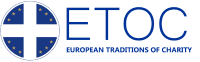

На що зараз збираємо кошти
Збір на проєкт
«Доглядальний підрозділ»

Новий благодійний проєкт має допомогти самотнім стареньким та людям з інвалідністю, які не можуть піклуватись про себе самостійно та виходити з квартири.
Плануємо надавати такі послуги:
- Купівля та приготування їжі
- Легке прибирання
- Винесення сміття
- Допомога з гігієною
Збір на допомогу харків'янам
Наша команда допомагає доглядати та годувати кілька тисяч людей з обмеженими
можливостями, дітей з багатодітних та малозабезпечених сімей, самотніх людей похилого віку.
На постійній основі нам необхідні засоби для догляду, підгузки для дорослих та дітей, консерви,
крупи та інша їжа. Все купуємо в Полтаві та довозимо власним транспортом у Харків.